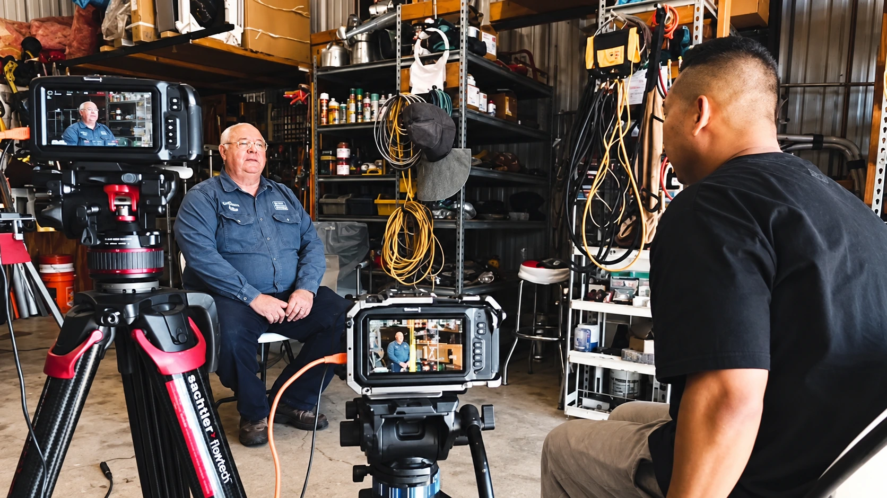
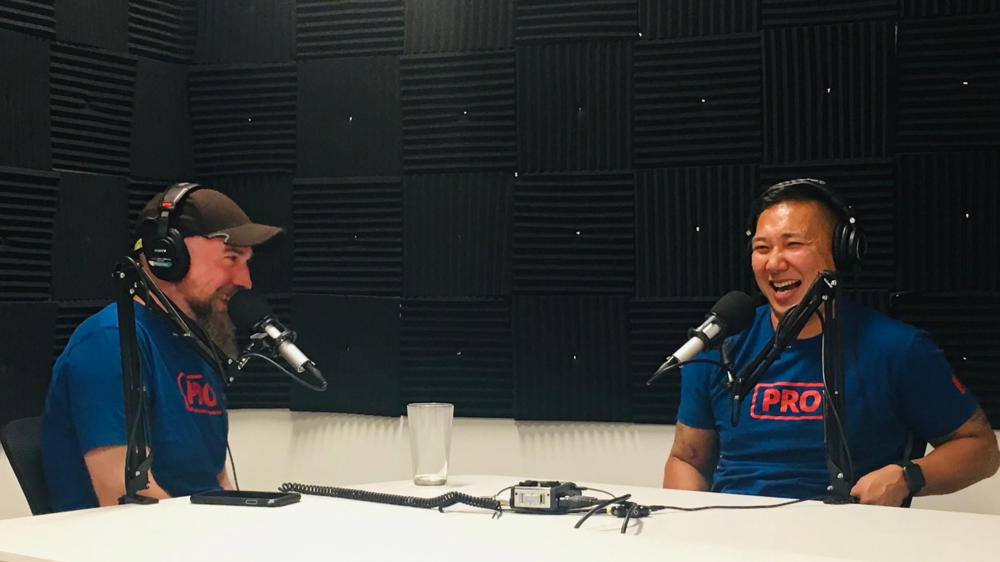

Build the solution. Grow the people. Make it last.
I’m JC Navarro. I build practical AI workflows, turn unclear requests into working systems, and bring people together to deliver. I help teams scale their output while developing the judgment and craft behind it.
Days to minutesEstimated change in brief completion time
Selected work / Housecall Pro
Find the constraint. Build a better way.
The decisions, systems, and working relationships behind the results.
01 / PROCESS IMPROVEMENT & AI ADOPTION
Give the team a complete brief before the work begins.
Incomplete requests were costing days of clarification. I built a Claude skill that helps requesters work through the requirements before submitting a brief.
Previous back-and-forth2–4 days
→
Guided brief creation~30 minutes
I observed typical project turnaround improve from about two weeks to one, giving designers more time to produce the work and develop their craft.
Approximate timings based on my experience across campaigns, event brand kits, web design, logo assets, static ads, and video.
Read the case study
The problem
Requests often lacked asset counts, aspect ratios, delivery channels, business objectives, deadlines, or dependencies. Designers and requesters had to resolve those gaps before production could move forward.
What I built
I designed a reusable brief generator in Claude that requires requesters to answer the questions needed for a complete handoff. It helps people organize their thoughts and makes missing requirements visible earlier.
How I introduced it
After discussing process improvements with my CMO, I introduced the skill at a marketing town hall and rolled it into our marketing help channel. I also saw colleagues begin meeting with stakeholders and building skills for other problems.
What changed
More complete briefs reduced clarification cycles. Stakeholders received work sooner, and the creative team gained room for additional projects and craft development. The time estimates describe brief completion and overall delivery separately.
Intake designStakeholder alignmentAI adoption

Behind the scenes of customer storytelling.
02 / RESEARCH & RESOURCE PLANNING
Three industries. Five features. One production week.
A campaign needed plumbing, electrical, and HVAC companies that each used five specific features. I researched the right candidates and concentrated filming within one region.
3Customer shoots
1 weekFilming schedule
~$12,000Shoot expenses
3 industriesPlumbing · Electrical · HVAC
All campaign videos delivered.
How the research shaped production
My contribution
I used company data through Omni and Snowflake connected to Claude to identify companies that fit the feature requirements, industry, company size, and location. I organized candidate information into sheets and coordinated the budget and filming schedules.
The decision that mattered
Geography was part of the research criteria from the start. Finding qualified companies close together made a single production week possible and reduced repeated travel.
Budget scope
The approximately $12,000 covered production rentals, contracted help, travel, lodging, and per diem. I recall previous outsourced shoots costing substantially more; the figure here reports this project’s shoot expenses, without treating editing or internal labor as included.
ResearchBudget ownershipDelivery
03 / AI WORKFLOWS & CONTENT OPERATIONS
Find the customer evidence already in the footage.
Editors needed interviews that supported three features in a Housecall Pro bundle campaign. The search covered roughly five companies in each of 12 industries.
Relevant material surfaced in minutes, compared with an estimated 30 minutes of manual transcript searching per interview.
Inside the workflow
The problem
Finding the right evidence meant listening to 45–60-minute interviews or searching transcripts manually. The team also needed to know whether the available material could support a particular industry’s video.
What I built
I built a Claude workflow to review VTT transcripts and produce a feasibility report with relevant quotes, feature references, and possible video directions. Instructions required preserving the customer’s wording, while timestamps made the material traceable to the interview.
From research to production
I incorporated Daydream into the process to help assemble video from a brief and let editors watch the source clips. Editors were the primary users. The same approach could also support testimonial research for other teams.
What the estimate means
The comparison describes locating relevant material in an individual interview. It is not a measurement of final editing time or a calculated total across the archive.
Information retrievalWorkflow designEditor enablement
04 / COACHING & PEOPLE DEVELOPMENT
Help a designer gain a voice in the decisions.
A designer was receiving direction secondhand. I advocated for his inclusion in stakeholder meetings and coached him to prepare questions and communicate his solutions clearly.
He took greater ownership, made his work more visible, and was promoted within months.
The coaching behind the change
Access and preparation
He was the sole designer working on the brand refresh. Being in the meetings gave him direct access to the context behind requests. In our 1:1s, I encouraged a regular set of questions and coached clear communication.
What I observed
He began proposing and explaining solutions, joining relevant conversations, and reporting his work in shared channels. Greater visibility brought more opportunities to contribute.
My role
My contribution was advocacy and coaching. The design work, growing ownership, and promotion were his achievements. This is the kind of development I enjoy supporting.
CoachingCommunicationOwnership
05 / COLLABORATION & EXPERIMENTATION
Let customer testimony lead the ad.
Working as creative project manager alongside a Senior Manager of Performance Marketing, I helped deliver geo-test campaigns that evolved from voiceover-led scripts to testimonial-led ads.
The team observed improved click efficiency, with cost per click a primary signal.
How the work evolved
The observation
We saw stronger engagement when customer testimony entered the ad. The team brought testimonials earlier in the script, then tested ads built entirely around firsthand customer accounts.
My contribution
I partnered on the campaigns as the creative project manager. Performance analysis and testing decisions were collaborative with the performance marketing lead.
The result
I recall lower cost per click, with click-through rate and CPM also part of the discussion. The improvement is unquantified here; these measures do not establish a conversion-rate lift.
Project managementTestingPerformance partnership
06 / CONTRACTOR LEADERSHIP & PRODUCTION DELIVERY
15 customer shoots. 12 contractors. One month.
I coordinated the contractor team and resources to film 15 home-service professionals in a single month.
15Customer shoots
12Contractors
1 monthProduction period
$50,000Reported project spend
A separate production effort from the three-shoot, one-week project above.
Alongside my multimedia role, I led the broader creative team through the end of 2025. The nine-person internal team was under my leadership for most of that assignment; 12 contractors were involved for a shorter period.
I hired two designers and three videographer/editors, handled performance reviews primarily for the video team, and managed contractor budgets, negotiations, contracts, delivery, and relationships.
I enjoy understanding what motivates people, helping them communicate their ideas, and giving them the context to make decisions with confidence.
6Designers on the internal team
3Videographers on the internal team
12Contractors led during a shorter period
5Internal hires: two designers and three videographer/editors
What I bring
Research, systems, people, and delivery.
My recent work sits inside marketing. The capabilities travel with me: understand the requirements, organize the work, build a useful solution, and help people put it into practice.
1
Research
Translate business requirements into criteria, investigate the available data, and identify workable options.
2
Build
Create intake systems, automations, and AI workflows that solve a specific problem in the work.
3
Deliver
Coordinate scope, resources, budgets, stakeholders, and dependencies through to completion.
4
Develop
Coach communication and judgment so people can take ownership and keep improving the work.
AI in practice
Build the foundation. Keep the human touch.
I design the role of AI around the work. In video, AI helps organize the material and build the initial structure. In graphic design, people create the original and AI helps scale it.
02 / HUMAN CRAFTShape the feelMusic, pacing, spacing, emphasis, and color.
GRAPHIC DESIGN
Human-built. AI-scaled.
01 / HUMAN ORIGINALCreate the designCreative direction and the original visual.
02 / AI SCALEAdapt & resizeRepeatable variations and brand checks.
03 / HUMAN REVIEWRefine & approveJudgment, consistency, and final quality.
INTAKE & REPORTING
Make work visible.
Automated intake and executive reporting to organize demand and surface delivery status and constraints.
PRODUCTION & ASSETS
Reduce repetitive work.
Skills for image resizing and workflows for inspecting, naming, and organizing footage.
QUALITY & CONSISTENCY
Check against the standard.
Reusable brand validators to surface inconsistencies for review before creative work is delivered.
How I work
Understand it. Improve it. Pass it on.
I start by listening to the people doing the work and clarifying the business goal. I build around the constraint, explain the decisions, and help the team take ownership. Seeing people continue and improve what we started is a meaningful part of success for me.
About JC
A career built around people and problems.
Government IT gave me a foundation in technology and systems. Full-time ministry taught me to lead programs, recruit and develop volunteers, communicate clearly, and understand what motivates people. Running a creative business taught me to manage client relationships, budgets, and delivery.
At Housecall Pro, I brought those skills together through multimedia leadership, an interim creative director assignment, and creative operations. I’m interested in broader operations and AI enablement opportunities where I can keep leading a team, building practical solutions, and delivering against clear business goals.
Outside work, I coach youth basketball, spend time with my wife and three kids, and serve in my local community. Helping people see what they’re capable of is a thread that runs through my life.

A conversation, a shared laugh, a connection.
CurrentSenior Manager, Creative Operations Housecall Pro
LocationSan Diego, California
EducationBA, Public Administration San Diego State University
FocusOperations · AI workflows · Team development · Cross-functional delivery
Housecall Pro
Video and motion, multimedia management, and creative operations. Interim Creative Director, 2023–2025, alongside my multimedia role.
JC Navarro Films
Founded and ran a creative business alongside ministry, managing clients and production from concept to delivery.
Full-time ministry
Operations, program building, speaking, volunteer recruitment, and leadership development.
Government IT
Information Technology Specialist while completing college.
Let’s talk
What does your team need to build next?
I’m interested in leadership opportunities that connect operational improvement, practical technology, and people development.